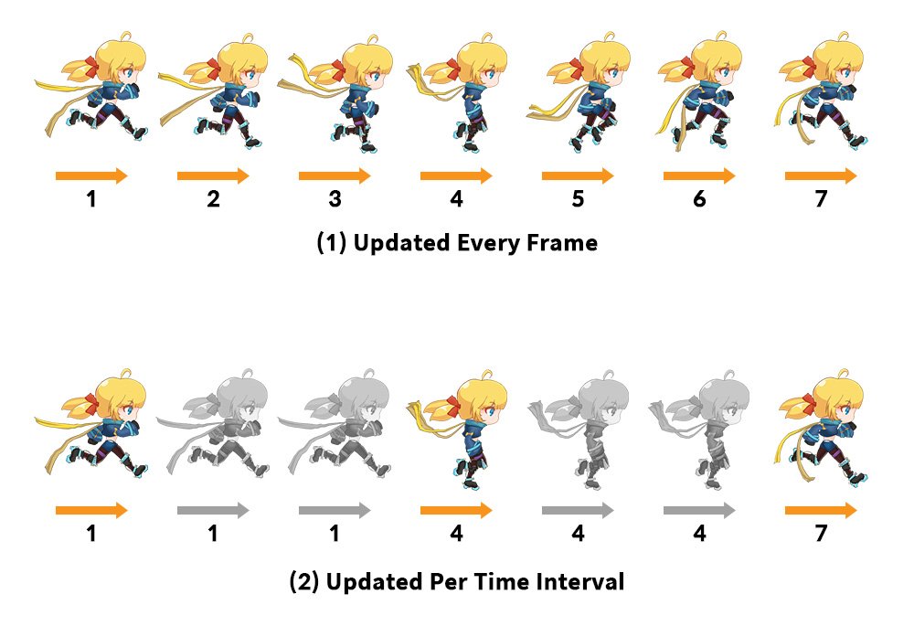
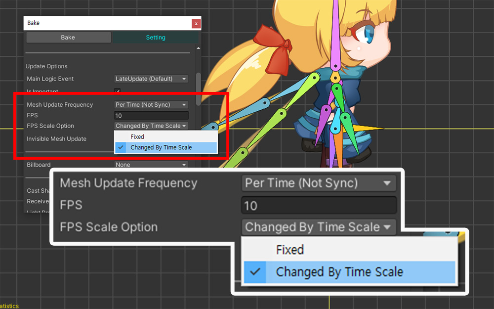

AnyPortrait > Manual > Play at Low FPS
Play at Low FPS
1.5.0
If you recall watching animations shown on TV or in theaters, you will notice that the animations are played at low frames.
This may be a limitation due to the classic production method of drawing each frame by hand, but everyone has probably experienced the charm of the low frame at least once.
Since AnyPortrait was originally developed for games, the meshes are updated by animation every frame during the game.
However, if you reduce the FPS (Frames per second) of the animation and play it like a classic animation, you will see interesting results.

Since the game runs at the highest possible FPS, if you want to play the animation at a lower FPS, the processing will have to be done as above.
(1) Basically, the meshes will be updated to match the animation in every frame of the game.
(2) In order to play an animation at a low FPS, the mesh must be updated at certain frames of the game, and the previous state must be maintained without being updated at other frames.
In other words, controlling the “frequency at which the mesh is updated” is an approach to playing animations at low FPS.
This page covers how to reduce FPS using the "Mesh Update Frequency" option.
Mesh Update Frequency Option
You can adjust the FPS of the animation using the "Mesh Update Frequency" option added in AnyPortrait v1.4.7.
There are three ways to change this option:

The first method is to set options in the “Bake dialog”.
(1) Press the Bake button to open the Bake dialog.
(2) Select the Setting tab.
(3) Change the value of the Mesh Update Frequency option.
There are three options:
- Every Frame : The meshes are updated every frame. (default)
- Per Time (Not Sync) : Meshes are updated at low FPS.
- Per Time (Sync) : Meshes are updated at a low FPS, and mesh update timing is synchronized between characters with the same option.
Except for Every Frame, the two options are the settings for Play at low FPS covered on this page.
If you set Per Time (Not Sync) (or Per Time (Sync)) as above, an additional "FPS" option appears to set which FPS to play at.
If you enter a value lower than the typical video refresh rate of 60, you will be able to create a classic animation feel.
Note
As the FPS option value, only Max 30 FPS can be entered.
Based on the general screen refresh rate of "60 FPS", if you enter "a value between 30 and 60 FPS", "continuously played frames" and "idle frames" will be processed alternately.
This does not give good results, so it should be limited to a maximum of 30 FPS.

The second method is to set it in “Inspector UI”.
(1) Select a character in the Unity scene.
(2) Select the “General Properties” tab.
(3) Set the Mesh Update Frequency option in the same way as in the Bake dialog.
The third way is to use Script.
Try using the following functions of apPortrait. (Script Description Page)
1. public void SetUpdateMeshesEveryFrame()
: Set the mesh update frequency to "Every Frame".
2. public void SetUpdateMeshesPerTime(int fps, bool isSyncUpdate)
: Set the mesh update frequency to "Per Time".
- int fps : The FPS value corresponding to the refresh rate. Please enter a value less than 30.
- bool isSyncUpdate : Entering true will synchronize mesh update timing with other characters.
Check out the results of adjusting the FPS of the animation using these options in the video below!
You can compare each option and the main FPS.
For the Per Time option, check the difference in whether or not it is synchronized.

1.5.0
The option for Time Scale, which is the basis for calculating FPS, has been added in v1.5.0.
If the value of FPS Scale Option is Fixed, FPS is calculated using the unscaled time.
If the value of FPS Scale Option is Changed By Time Scale, FPS is calculated using the scaled time.
Since AnyPortrait character updates basically use the scaled time, FPS changes depending on Time Scale of the project setting.
It is also affected by the SetUpdateTimeMethod function of apPortrait, so you can use it to set the time scale directly.
This option is only used when Mesh Update Frequency is "Per Time (Not Sync)".
Performance comparison with Important option
AnyPortrait's "Important" option is also an option related to the refresh rate. (Related Page)
Important is an option where all functions operate every frame. Important can be Disabled for optimization.
With the Important option "disabled" you can set the FPS for intermittent updates.
So at first glance, "Disable Important option" and "Per Time option for mesh refresh frequency" seem to be the same.
However, since these two options were developed for completely different purposes, there are differences:
1. Important Option
This feature is an option provided for optimization purposes. (If you disable the Important option)
This option lets computations for less important characters be distributed when a large number of characters appear in a scene.
FPS is adjusted according to the state of the game, and calculations are distributed so that they are not concentrated on specific frames.
Depending on the situation, it may update at a much lower FPS than the specified FPS.
Additionally, as the update operates intermittently, heavy and error-expected Physics features (Jiggle Bone, Physics Modifier) are disabled.
2. Mesh Update Frequency Option
This function is only for visual presentation and is not a function for performance optimization.
Instead, it has the characteristic that physical functions, etc. work always.
The biggest difference between the two options is performance.
Let’s check the differences through the following profiling results.

As shown above, we created a scene that duplicates the character 50 times and then plays it.
First, with the Important option turned on, the Mesh Update Frequency option was set to Every Frame.
This state is also the default for AnyPortrait.
When you run the game, you can see through the profiler that the game records approximately 30 FPS.
Next, with the Important option turned on, we set the Mesh Update Frequency option to Per Time (Sync - 12FPS).
When running the game, performance values between 30 FPS and 60 FPS are recorded with large variations.
The average frame rate appears to have improved slightly, but the variation is large, so the perceived performance improvement will not be significant.

Lastly, Important option turned off. (The mesh update frequency option has no effect in this state.)
You will see a dramatic increase in game performance.
You can also see that the performance deviation is not large because the character's operations are distributed.
However, for the sake of game performance, the FPS of each character's animation is significantly lowered.

The profiling results can be summarized as above.
How the Mesh Update Frequency Option Works
It may seem surprising that the Mesh Update Frequency option does not provide much of a performance boost given that the animation frames are intermittent.
The following explanation will help you understand this feature in more detail.
Please read while referring to the previous profiling experiment.

AnyPortrait is updated in the above order when the game runs.
First, animations, modifiers, etc. are calculated in batches.
Then, the calculation results are applied to the mesh, and the appearance of the mesh changes.

And this process is performed in every frame of the game.
The default settings (with Important enabled and the Mesh Update Frequency option set to Every Frame) correspond to this case.
If you change the Mesh Update Frequency option to Per Time to play the animation at a lower FPS, the processing will change as shown above.
While animation and modifier calculations are performed every frame, operations that update the mesh's appearance are performed discontinuously.
Animations and modifiers are continuously updated even when the mesh is not updating in frames, so it is ready to react quickly when some changes occur, that playing other animations, toggling the mesh's visibility, controlling your character externally, etc.
In other words, contrary to appearance, calculations are continuously carried out in an agile manner and do not affect the game system.

Lastly, Important option is disabled.
This function performs animation and modifier calculations as well as intermittent mesh updates.
Only some operations for performance control are performed in each frame, and most operations are performed discontinuously, which greatly helps improve performance.
However, there are disadvantages in that it is difficult to respond quickly in a process where calculations are not made, and continuous calculation processing, such as physical functions, is impossible.
Check these differences and use the option that suits your needs.
When the option is set to Per Time, it has the following characteristics.
- When changes occur in the root unit, visibility of the mesh, or whether the size of the object is reversed, the mesh is updated immediately regardless of the options.
- Since the bone is continuously updated, the socket also moves every frame regardless of the option.